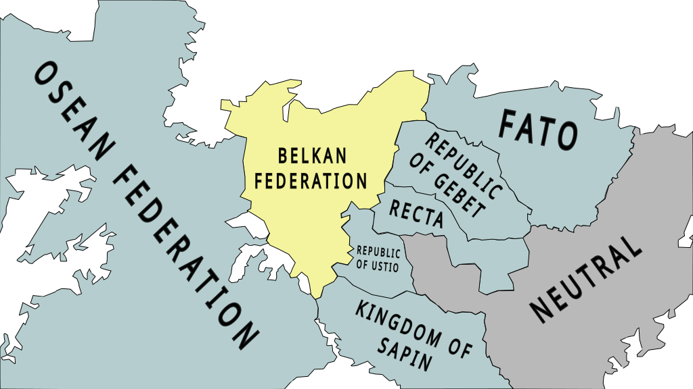
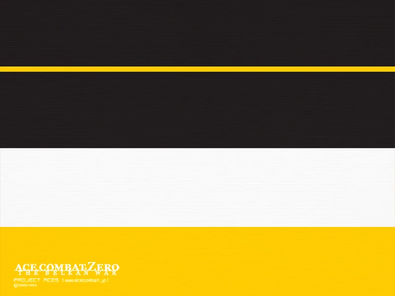
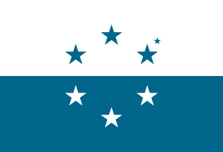
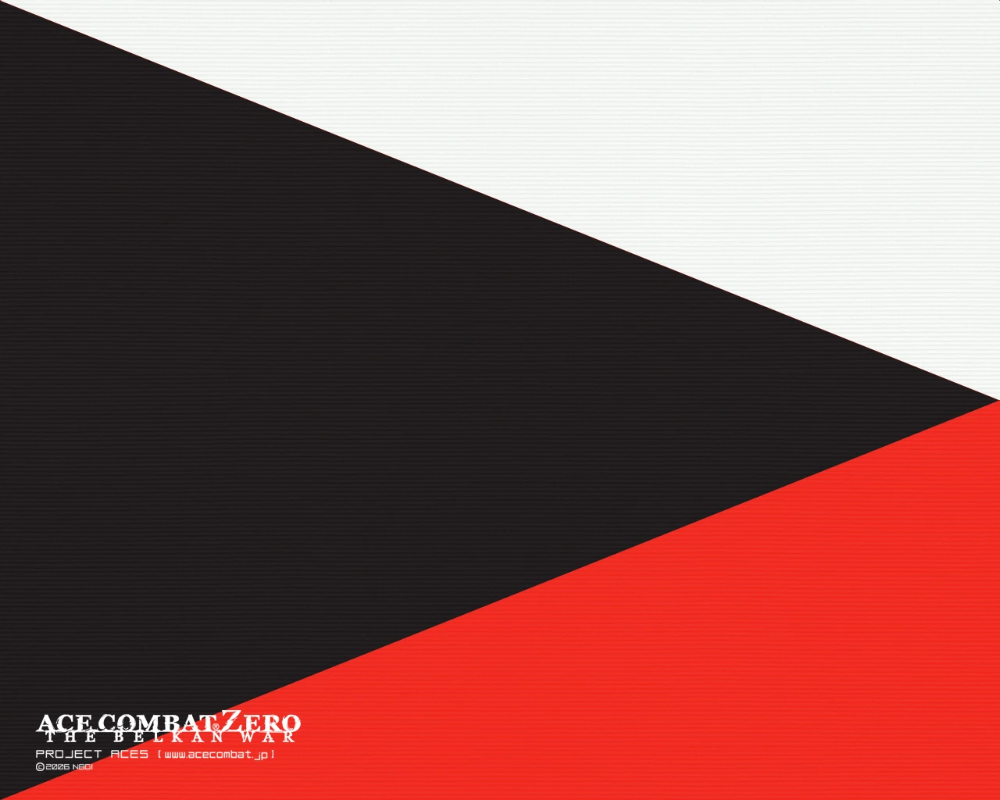
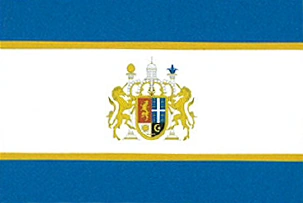

The Belkan Federation is a major country on the Osean continent. The nation is best known for it's military history and for being one of the first countries to use aircraft in warfare.
During the 1980's, Belka focused it's industry on creating experimantal weapons of mass destruction. This increased military spending, along with a failed economic joint venture with the Osean Federation, lead to an economic recession by 1987. Belka would then either sell territories to their neighbors, or allow them to secede.
In an attempt to reclaim their territory and resources, Belka would declare war on all it's neighbors on March 1995, starting the Belkan War.

The Osean Federation is one of the largest nations on the continent of Osea. It is a highly developed international superpower.
During the 1980's and 90's, the Osean Federation would take advantage of Belka's ongoing economic crisis. They supported the seccession of Belka's eastern territories, and began to purchase Belka's western territories.
In 1995, Belka declared war on all it's neighbors, including the Osean Federation. In response, The Osean Federation created the Allied Forces, an alliance of different countries that were against Belka.

FATO is a small federal state in the Northeastern portion of the Osean continent. They purchased a small part of Belkan territory during Belka's economic crisis.
In 1995, the federal state was invaded and occupied by Belka during Belka's attempt to retake lost territory. FATO's airforce was defeated by Belka's elite Indigo Squadron. During Belka's invasion, Indigo Squadron's leader, Dimitri Heinreich, was able to shoot down nine FATO fighters within five minutes of combat.
FATO was eventually liberated by the rest of the Allied Forces.
Gebet is a small country on the Eastern side of the continent of Osea.
Formerly a Belkan territory, they became independent during Belka's economic crisis when Belka sold it's territories in an attempt to save their economy.
They were invaded by Belka in 1995 during Belka's attempt to retake their lost territory, causing Gebet to join the Allied Forces.
Recta is a landlocked country located in eastern Osea. In the 1960's, Recta was invaded and annexed by the Belkan Federation.
In the 1970's, Recta attempted to revolt against it's occupiers. At first, Recta fought Belka into a stalemate, until eventually Recta was defeated by an elite Belkan air force squadron, Silber Team.
In the 1980's, Belka faced an economic crisis. During this crisis, Recta was able to secede and become an independent nation again.
Eventually, Belka would declare war on all it's neighbors in an attempt to take back lost territory.
The Republic of Ustio is a small landlocked nation that was formerly a part of the Belkan Federation. Most of the country is made up of farmland, remote towns, and a few mountain ranges. It seceded from Belka during Belka's economic crisis, declaring independence in 1988.
Belka would attempt to conquer it's lost territory, declaring war on all it's neighbors in 1995. Ustio would end up being occupied by Belka, until the Allied Forces and hired mercenaries were able to liberate the country.

The Kingdom of Sapin is a country in the eastern parts of the continent, Osea. During Belka's economic crisis, they would aqquire a portion of Belka's southern territories.
In March 1995, Belka would declare war on all it's neighbors in an attempt to regain their territory. The kingdom joined the Allied Forces, and was able to fight back against Belka's invasion.
